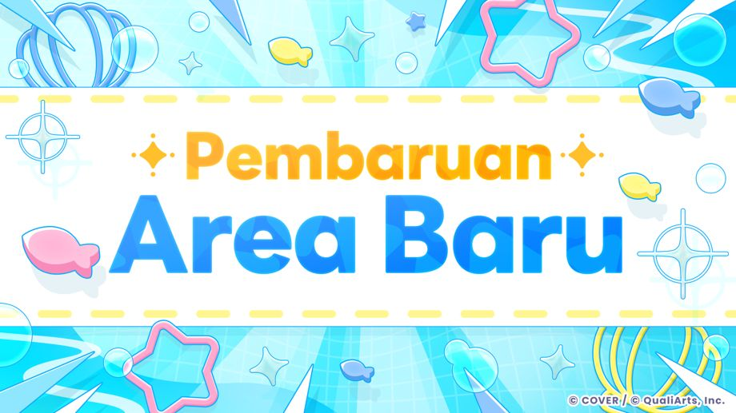

Terima kasih sudah menggunakan layanan ini.
Ini adalah tim operasional "hololive Dreams."
2026-09-29 11:00:00pembaruan Ver.1.2.0 telah dilakukan.
Area Baru "Soda Pop Lagoon" Hadir!

2026-09-29 11:00:00Area Baru "Soda Pop Lagoon" Hadir!
Soda Pop Lagoon adalah area baru yang terdiri dari lautan yang luas dan hamparan pulau.
*Selain penambahan area baru "Soda Pop Lagoon", fitur baru "Memancing" dan Minigame baru "Splash Ball" juga akan ditambahkan.
Untuk informasi lebih lanjut, silakan periksa [Pengumuman]→[Daftar Informasi]→[Area Baru "Soda Pop Lagoon" dibuka!] .
Pembaruan Lainnya
◆Pick Up Lagu Unggulan

Ketika memilih lagu, memilih "Pick Up Lagu Unggulan" akan secara otomatis memilih lagu-lagu yang digunakan untuk lagu tantangan event dan lagu-lagu dari talent yang ditampilkan.
Untuk lagu yang dipilih menggunakan fitur ini, "Bonus Pick Up" dengan nilai yang sama atau lebih dari bonus panjang lagu akan diaplikasikan, terlepas dari Pilihan lagu.
*Fitur "Pick Up Lagu Unggulan" hanya berlaku di "Peringkat" dan "Private Mode" yang ada di Live.
◆Peningkatan dan Pembaruan Live
- Visibilitas not yang berdekatan ditingkatkan.
- Masalah not yang terjebak dalam loop dalam kondisi tertentu telah diperbaiki.
- Deteksi terhadap not panjang yang pendek sudah ditingkatkan.
- Deteksi terhadap titik awal not panjang dalam beberapa kondisi sudah ditingkatkan.
- Masalah di mana perhitungan kombo maksimal berfluktuasi dalam kondisi tertentu sudah diperbaiki.
- Ketika memilih Buat Partitur, sekarang pemain bisa melakukan filter "Tanpa Rintangan" dan "Tanpa Beberapa Jari".
- Kondisi untuk membuka informasi partitur diubah. Partitur musik resmi akan terbuka setelah memainkan partitur tersebut, sedangkan partitur musik buatan bisa dibuka tanpa membutuhkan kondisi apapun.
- Tangkapan layar untuk layar hasil live dan layar informasi partitur sekarang bisa disimpan.
- Pembaruan ini juga memperbaiki masalah ketika memilih lagu, di mana kursor akan kembali ke bagian atas halaman ketika kursor berada di posisi lagu yang dihilangkan dari kriteria filter.
- Game juga ditingkatkan sehingga pemain bisa menekan tombol pause, bahkan ketika hitung mundur, setelah pemain menakan tombol "Kembali ke Live" setelah melakukan pause ketika bermain game ritmenya.
- Masalah yang muncul dalam beberapa kondisi ketika Auto-Play tidak bekerja ketika bermain Live dengan pemain lainnya walaupun opsi "AUTO" sudah dicentang kini sudah diperbaiki.
◆Peningkatan Terhadap Live Config
Item berikut telah ditambahkan pada fitur Live di game ritme.
-
"Warna Lightstick"
Pemain bisa memilih warna lightstick yang digunakan pada berbagai macam event seperti hololive fes. -
"Tampilan Penilaian"
Pemain bisa melakukan konfigurasi sitem untuk menampilkan karakter sesuai dengan ambang atas dan bawah yang sudah ditentukan. -
"Posisi Tampilan FAST/SLOW"
Posisi Tampilan FAST/SLOW dapat diatur di bagian atas atau bawah penilaian. -
"Posisi Tampilan Penilaian"
Posisi Tampilan Penilaian bisa digeser ke atas atau bawah dalam rentang 100 langkah. -
"Tipe Tampilan Penilaian"
Pemain bisa memilih untuk menampilkan indikasi tampilan pada posisi tetap di tengah jalur, atau di posisi yang sesuai dengan jalur tempat indikasi tampilan dibuat. -
"Efek peringatan saat HP rendah"
Efek animasi peringatan saat HP rendah bisa diaktifkan atau dinonaktifkan. -
SP Skill Timing
Pemain bisa memilih untuk menampilkan dalam bentuk line seperti sebelumnya atau dalam bentuk ikon. -
"Lebar Jalur"
Lebar jalur bisa diubah. -
"Jumlah Pembagian Jalur"
Jumlah garis pembagi jalur yang ditampilkan kini dapat diatur. -
"Lebar Not"
Lebar not bisa diubah. -
"Tinggi Not"
Tinggi vertikal not bisa diubah.
Selain itu, beberapa item berikut yang digunakan di game ritme di Live Config juga mengalami perubahan.
-
"Durasi Tampilan Not"
Mengenai durasi tampilan not yang ada di Live Config, jika garis penilaian berada di atas potongan bawah, sekarang perhitungan akan didasarkan pada waktu yang dibutuhkan oleh not untuk mencapai garis penilaian setelah not itu muncul.
◆Peningkatan Pada fitur Buat Partitur
- Perubahan telah dilakukan pada fitur ini, di mana level kesulitan dari Buat Partitur yang dibuat tidak bisa diatur jauh di bawah estimasi tingkat kesulitan.
- Level zoom pada layar Buat Partitur bisa diatur hingga titik maksimal 100x.
- Masalah program yang berjalan lambat ketika melakukan edit terhadap beberapa partitur sudah diperbaiki.
- Pembaruan ini juga mengatasi masalah di mana dalam kondisi tertentu, not panjang dan not dekorasi ditempat di posisi yang tidak diinginkan ketika mengedit kembali partitur musik yang sudah disimpan.
Penyesuaian Mini-game "Pokajan!"
Dalam "Pokajan!", Masalah di mana pemain bisa melakukan manipulasi pencapaian dengan cara memutus koneksi dengan sengaja sudah dikonfirmasi dan beberapa penyesuaian berikut akan diimplementasikan.
- Dalam "Pokajan!", hasil dari permainan tersebut akan tercermin pada jumlah koin pemain.
Selain itu, seiring dengan penyesuaian ini, jumlah total koin dan ranking untuk "Pokajan!" direset.
Silakan periksa Pengumuman「Pengumuman Perubahan Sistem "Pokajan!" Mendatang」Untuk informasi lebih lanjut.
◆Update Fitur Foto
- Tombol untuk menampilkan gird telah ditambahkan.
- Perilaku kamera saat melakukan kontak dengan suatu penghalang juga telah dilakuakn penyesuaian.
◆Peningkatan dan Pembaruan Event
- Setelah periode event berakhir, pemain bisa memeriksa tanggal dan waktu pengumuman hasil pada halaman utama event.
- Tampilan juga diubah sehingga pemain harus mengetuk untuk melanjutkan ke layar berikutnya saat hasil event ranking ditampilkan.
◆ Pembaruan Lainnya
- Sistem pencocokan pemain di "Mega Circuit" telah disesuaikan agar lebih mencerminkan gameplay.
- Pada layar Tautkan Akun, ID pemain disembunyikan secara default, dan pemain bisa mengaktifkan dan menonaktifkan tampilan tersebut melalui toggle.
- Pemain yang menggunakan Mode Privat saat bermain multiplayer juga bisa dilaporkan.
◆Perbaikan Bug
- Berbagai bug minor di beberapa minigame telah diperbaiki.
- Bug minor yang telah diperbaiki.